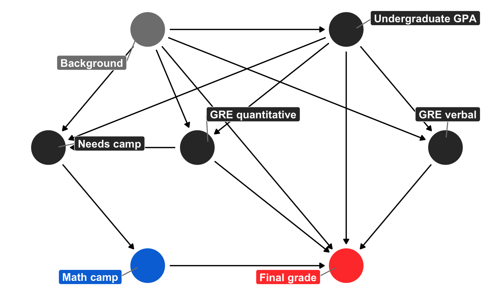
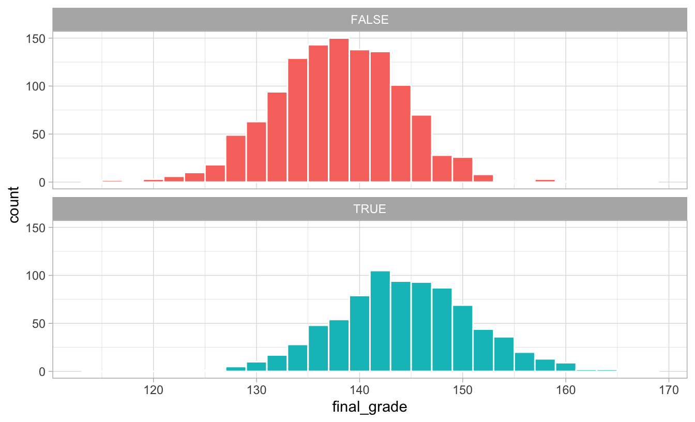
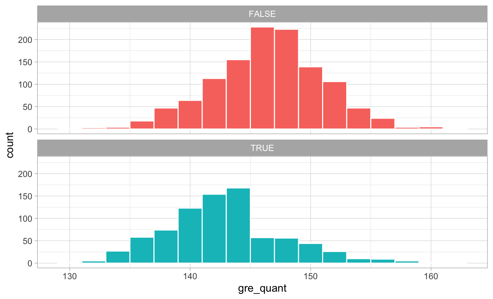
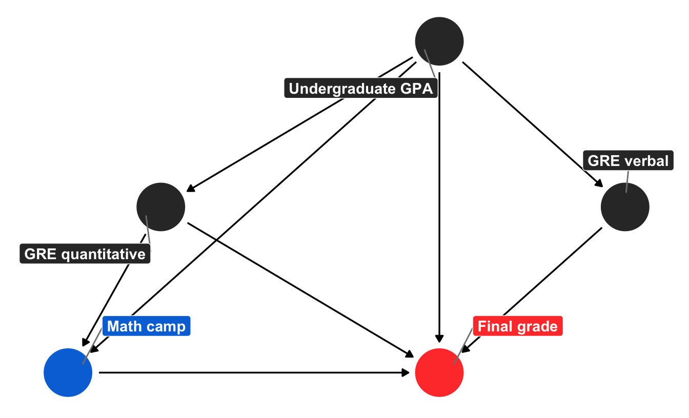

![]()
I’ve been teaching program evaluation in the MPA/MPP program at GSU for the past semester and a half, and since I was given free rein over how to teach it, I decided to make it as modern and cutting edge as possible. To do this, I’ve infused the class with modern causal inference techniques (commonly known as the “causal revolution”), focused on the language of directed acyclic graphs (DAGs), do-calculus, confounding, colliding, and the rest of Judea Pearl’s world of finding causation in observational data.
However, I was never taught this approach in any of my doctoral classes, and I’m entirely self-taught. I read The Book of Why in March 2019, and I’ve thrown myself into every possible journal article, blog post, and online course I’ve come across in order to understand how to isolate and identify causal effects. It’s been hard, but thanks to an incredibly welcoming community of economists, epidemiologists, and political scientists on Twitter, I’m getting it! (And so are my students!)
The purpose of this post isn’t to introduce causal models and DAGs and confounders vs. colliders and all that. For that kind of introduction, consult any (or all!) of these resources:
- Nick Huntington-Klein’s ECON 305: Economics, Causality, and Analytics course (especially lectures 13–18)
- Julia M. Rohrer, “Thinking Clearly About Correlations and Causation: Graphical Causal Models for Observational Data,” Advances in Methods and Practices in Psychological Science 1, no. 1 (March 2018): 27–42, doi: 10.1177/2515245917745629
- Miguel A. Hernán and James M. Robbins, Causal Inference: What If (CRC Press, 2020), https://www.hsph.harvard.edu/miguel-hernan/causal-inference-book/
- Paul Hünermund and Elias Bareinboim, “Causal Inference and Data-Fusion in Econometrics,” December 19, 2019, arXiv: 1912.09104 [econ.EM], https://arxiv.org/abs/1912.09104
- Felix Elwert, “Graphical Causal Models,” chap. 13 in Handbook of Causal Analysis for Social Research, ed. Stephen L. Morgan (New York: Springer, 2013), 245–273, doi: 10.1007/978-94-007-6094-3_13
- Julian Schuessler and Peter Selb, “Graphical Causal Models for Survey Inference” (December 17, 2019), doi: 10.31235/osf.io/hbg3m, https://osf.io/preprints/socarxiv/hbg3m/
- Scott Cunningham, “Directed acyclical graphs” in Causal Inference: The Mixtape (2018), https://www.scunning.com/mixtape.html
- Paul Hünermund, “Causal Inference with Directed Acyclic Graphs,” Udemy
- Jason A. Roy, “A Crash Course in Causality: Inferring Causal Effects from Observational Data,” Coursera
Instead, this post is a practical example of how exactly you can isolate causal effects by closing backdoor paths and adjusting for confounders in observational data. At its core, DAG-based causal inference involves isolating relationships—if some variable causes both your treatment and your outcome (thus confounding it), you can deal with that common cause in some statistical way and isolate the treatment–outcome effect. There’s no one right way to statistically deal with confounding, so here I show a few different ways to do it.
To make this more concrete and practical, I use simulated data from a hypothetical program, but I use actual variable names rather than the \(x\), \(y\), and \(z\) variables that are common in tutorials and articles about DAGs. Here, our outcome \(y\) is a final grade, \(x\) is a special math camp, and \(z\) is all the possible confounders of the effect of the math camp on the grade.
Like my post showing a bunch of different ways to test differences in means, this is mostly a resource to my students and to future me. Please feel free to comment and make corrections or additions at GitHub!
Here’s a tl;dr table of contents since this is a little long:
- Example program
- Simulated data
- Incorrect “correlation is not causation” estimate
- Adjustment using forbidden unmeasured variable
- Adjustment using educated-guess-based naive matching
- Brief interlude: Matching + slightly simpler DAG
- Adjustment using inverse probability weighting (IPW)
- Adjustment using matching (with Mahalanobis distance)
- Someday when I’m smarter: do-calculus
- Comparison of all methods
Example program
We’ll refer to a hypothetical math camp program throughout all these examples. Many policy schools offer a brief math camp in the weeks before students begin their graduate degrees, with the hope that it will help students be more prepared in math-heavy classes like statistics and microeconomics. For these examples, we’re interested in answering one question: what is the causal effect of attending math camp on final student outcomes?
We can use ggdag to draw a simplified causal model that explains what causes final student outcomes (it’s probably wrong, but whatever). I added all the fancy bells and whistles to the graph object here just for the sake of reference. In reality, you don’t need labels or coordinates or the individual geom_dag_*() layers and you can just do ggdag(math_camp_dag) to get a basic graph, but for fun I’ve included everything you need for a publication-worthy graph.
library(tidyverse) # ggplot, dplyr, %>%, and friends
library(ggdag) # Make DAGs with ggplot
library(dagitty) # Do basic DAG math
library(broom) # For converting model output to data frames
node_details <- tribble(
~name, ~label, ~x, ~y,
"math_camp", "Math camp", 2, 1,
"final_grade", "Final grade", 4, 1,
"needs_camp", "Needs camp", 1, 2,
"gre_quant", "GRE quantitative", 2.5, 2,
"gre_verbal", "GRE verbal", 5, 2,
"background", "Background", 2, 3,
"undergraduate_gpa", "Undergraduate GPA", 4, 3
)
node_labels <- node_details$label
names(node_labels) <- node_details$name
math_camp_dag <- dagify(final_grade ~ math_camp + gre_quant + gre_verbal +
undergraduate_gpa + background,
math_camp ~ needs_camp,
needs_camp ~ background + undergraduate_gpa + gre_quant,
gre_quant ~ background + undergraduate_gpa,
gre_verbal ~ background + undergraduate_gpa,
undergraduate_gpa ~ background,
exposure = "math_camp",
outcome = "final_grade",
latent = "background",
coords = node_details,
labels = node_labels)
# Turn DAG into a tidy data frame for plotting
math_camp_dag_tidy <- math_camp_dag %>%
tidy_dagitty() %>%
node_status() # Add column for exposure/outcome/latent
status_colors <- c(exposure = "#0074D9", outcome = "#FF4136", latent = "grey50")
# Fancier graph
ggplot(math_camp_dag_tidy, aes(x = x, y = y, xend = xend, yend = yend)) +
geom_dag_edges() +
geom_dag_point(aes(color = status)) +
geom_dag_label_repel(aes(label = label, fill = status), seed = 1234,
color = "white", fontface = "bold") +
scale_color_manual(values = status_colors, na.value = "grey20") +
scale_fill_manual(values = status_colors, na.value = "grey20") +
guides(color = FALSE, fill = FALSE) +
theme_dag()
We can tell a fairly complex story using this graph. Your final grade in the program is caused by a host of things, including your quantitative and verbal GRE scores (PROBABLY DEFINITELY NOT in real life, but go with it), your undergraduate GPA, and your unmeasured background factors (age, parental income, math anxiety, level of interest in the program, etc.). Your undergraduate GPA is determined by your background, and your GRE scores are determined by both your undergraduate GPA and your background. Because this math camp program is open to anyone, there is self-selection in who chooses to do it. We can pretend that this is decided by your undergraduate GPA, your quantitative GRE score, and your background. If the program was need-based and only offered to people with low GRE scores, we could draw an arrow from GRE quantitative to math camp, but we don’t. Finally, needing the math camp causes people to do it.
There is a direct path between our treatment and outcome (math camp → final grade), but there is also some possible backdoor confounding. Both GRE quantitative and undergraduate GPA have arrows pointing to final grade and math camp (through “needs camp”), which means they’re a common cause, and background is both a confounder and unmeasurable. But we don’t need to give up! If we adjust or control for “needs camp,” we can block the association between background, GRE quantitative, and undergraduate GPA. With this backdoor closed, we’ve isolated the math camp → final grade relationship and can find the causal effect.
However, we don’t really have a measure for needing math camp—we can’t read peoples’ minds and see if they need the program—so while it’d be great to just include a needs_camp variable in a regression model, we’ll have to use other techniques to close the backdoor.
You can find the backdoors automatically with Dagitty (draw the DAG there and notice red arrows between the unblocked confounders), or with functions in the dagitty R package. If you run paths(math_camp_dag), you can see that the only node pointing back into math_camp is needs_camp, and if you run adjustmentSets(math_camp_dag), you’ll see that needs_camp is the only required adjustment set:
paths(math_camp_dag)
## $paths
## [1] "math_camp -> final_grade"
## [2] "math_camp <- needs_camp <- background -> final_grade"
## [3] "math_camp <- needs_camp <- background -> gre_quant -> final_grade"
## [4] "math_camp <- needs_camp <- background -> gre_quant <- undergraduate_gpa -> final_grade"
## [5] "math_camp <- needs_camp <- background -> gre_quant <- undergraduate_gpa -> gre_verbal -> final_grade"
## [6] "math_camp <- needs_camp <- background -> gre_verbal -> final_grade"
## ...
##
## $open
## [1] TRUE TRUE TRUE FALSE FALSE TRUE FALSE FALSE TRUE TRUE TRUE
## [12] TRUE TRUE TRUE FALSE TRUE TRUE TRUE TRUE FALSE TRUE TRUE
## [23] TRUE TRUE FALSE FALSE TRUE FALSE FALSE TRUE TRUE TRUE
adjustmentSets(math_camp_dag)
## { needs_camp }Simulated data
Assuming this causal graph is correct (it’s probably not, but again, go with it), we can simulate data that reflects these causal relationships. There are a host of R packages for simulating data (like wakefield, simstudy, and fabricatr), but here I do it a little more manually using MASS::mvrnorm() to use a multivariate normal distribution to generate continuous variables that have a specific mean, standard deviation, and relationship with other variables.
Because data generation is beyond the scope of this post, the code below is heavily annotated. Importantly, the various mutate() commands that create the math_camp data below create relationships between the confounders, treatment, and outcome. We also create a needs_camp variable that is true if both a student’s quantitative GRE score is less than the average and if their undergraduate GPA is less than the average. We also build in some noncompliance: 80% of those who need math camp do it; 20% of those who don’t need it do it.
For the sake of simplicity, the outcome here (final_grade) isn’t GPA or anything—it’s an arbitrary number between 120 and 160 (though we could rescale it to something else).
Most importantly, we force the math camp program to cause a 10 point increase in students’ final grades. This is our baseline average treatment effect that we want to be able to find using different backdoor adjustment techniques.
# Make these random draws the same every time
set.seed(1234)
# Create 2,000 rows
num <- 2000
# Create confounder variables that are related to each other
mu <- c(undergrad_gpa = 3, gre_verbal = 160, gre_quant = 145)
stddev <- c(undergrad_gpa = 0.5, gre_verbal = 10, gre_quant = 5)
# Correlation matrix: undergrad GPA and verbal GRE have a correlation of 0.8;
# undergrad GPA and quantitative GRE have a correlation of 0.6, and verbal GRE
# and quantitative GRE have a correlation of 0.4
cor_matrix <- matrix(c(1.0, 0.8, 0.6,
0.8, 1.0, 0.4,
0.6, 0.4, 1.0),
ncol = 3)
# Convert correlation matrix to covariance matrix using fancy math
cov_matrix <- stddev %*% t(stddev) * cor_matrix
# Draw random numbers
confounders <- MASS::mvrnorm(n = num, mu = mu, Sigma = cov_matrix, empirical = TRUE) %>%
as_tibble() %>%
# Truncate values so they're within 130-170 range for GRE and less than 4.0 for GPA
mutate_at(vars(gre_verbal, gre_quant),
~case_when(
. > 170 ~ 170,
. < 130 ~ 130,
TRUE ~ .
)) %>%
mutate(undergrad_gpa = ifelse(undergrad_gpa > 4, 4, undergrad_gpa))
# Make official dataset of simulated values
math_camp <- tibble(id = 1:num) %>%
bind_cols(confounders) %>% # Bring in confounders
# People need math camp if their GRE and GPA is lower than the average
mutate(needs_camp = gre_quant < mean(gre_quant) &
undergrad_gpa < mean(undergrad_gpa)) %>%
# Build in some noncompliance: 80% of those who need math camp do it; 20% of
# those who don't need it do it.
mutate(math_camp = case_when(
needs_camp == TRUE ~ rbinom(n(), 1, 0.8),
needs_camp == FALSE ~ rbinom(n(), 1, 0.2)
)) %>%
# Create random error in grades
mutate(grade_noise = rnorm(num, 15, 5)) %>%
# Create final grade based on all the arrows going into the node in the DAG.
# There's a 10 point causal effect
mutate(final_grade = (0.3 * gre_verbal) + (0.5 * gre_quant) +
(0.4 * undergrad_gpa) + (10 * math_camp) + grade_noise) %>%
mutate(math_camp = as.logical(math_camp)) # Make true/falsePhew. That’s a lot of code to make fake data, but it worked! We can look at the first few rows:
head(math_camp)
## # A tibble: 6 x 8
## id undergrad_gpa gre_verbal gre_quant needs_camp math_camp grade_noise
## <int> <dbl> <dbl> <dbl> <lgl> <lgl> <dbl>
## 1 1 3.90 170 151. FALSE FALSE 13.5
## 2 2 3.20 163. 143. FALSE FALSE 13.2
## 3 3 2.83 162. 140. TRUE TRUE 10.4
## 4 4 2.63 144. 154. FALSE FALSE 17.0
## 5 5 3.24 170 148. FALSE FALSE 16.4
## 6 6 2.95 167. 146. FALSE FALSE 19.0
## # … with 1 more variable: final_grade <dbl>About 40% of the students participated in math camp:
math_camp %>%
count(math_camp) %>%
mutate(prop = n / sum(n))
## # A tibble: 2 x 3
## math_camp n prop
## <lgl> <int> <dbl>
## 1 FALSE 1182 0.591
## 2 TRUE 818 0.409Incorrect “correlation is not causation” estimate
We can take an initial stab at finding the causal effect of the program by comparing the average final grades for those who did math camp and those who didn’t. At first glance, it looks like math camp participants have a higher grade!
math_camp %>%
group_by(math_camp) %>%
summarize(avg = mean(final_grade))
## # A tibble: 2 x 2
## math_camp avg
## <lgl> <dbl>
## 1 FALSE 138.
## 2 TRUE 144.The distribution of scores is higher for those who did the program:
ggplot(math_camp, aes(x = final_grade, fill = math_camp)) +
geom_histogram(binwidth = 2, color = "white") +
guides(fill = FALSE) +
facet_wrap(vars(math_camp), ncol = 1) +
theme_light()
We can run a simple linear regression model to estimate the exact effect:
model_wrong <- lm(final_grade ~ math_camp, data = math_camp)
tidy(model_wrong)
## # A tibble: 2 x 5
## term estimate std.error statistic p.value
## <chr> <dbl> <dbl> <dbl> <dbl>
## 1 (Intercept) 138. 0.185 744. 0.
## 2 math_campTRUE 6.54 0.290 22.6 8.48e-101Based on this model, participating in the program is associated with 6.5 more points in your final grade. Neat.
This is wrong, though, since there are confounders at play that cause both attendance at math camp and final grade. We need to adjust for those to get the actual causal effect.
Adjustment using forbidden unmeasured variable
The backdoor confounder we have to worry about is needs_camp. We created this variable when we generated the data, so for fun, we can include it in the regression model as a control variable to adjust for it:
model_adj_needs_camp <- lm(final_grade ~ math_camp + needs_camp, data = math_camp)
tidy(model_adj_needs_camp)
## # A tibble: 3 x 5
## term estimate std.error statistic p.value
## <chr> <dbl> <dbl> <dbl> <dbl>
## 1 (Intercept) 139. 0.174 798. 0.
## 2 math_campTRUE 10.2 0.320 31.9 2.79e-181
## 3 needs_campTRUE -6.69 0.329 -20.3 1.28e- 83The coefficient for math_campTRUE is now ≈10, which is what it should be! Adjusting for needing math camp isolated the causal effect.
But we can’t do that in real life. We don’t know what needing math camp looks like in actual data, so we need to use other techniques.
Adjustment using educated-guess-based naive matching
One possible approach to guessing the need for math camp is to create groups of students based on what we think might be driving the need for camp. We know from the causal model that quantitative GRE scores and undergraduate GPAs partially cause needing the program. We can assume that people with lower test scores or lower GPAs need the camp and create our own guess about what the threshold might be.
Let’s look at the distribution of GRE scores and see if there’s any pattern about why people may have chosen to do the program:
ggplot(math_camp, aes(x = gre_quant, fill = math_camp)) +
geom_histogram(binwidth = 2, color = "white") +
guides(fill = FALSE) +
facet_wrap(vars(math_camp), ncol = 1) +
theme_light()
There’s a pretty noticable break in the distribution of GRE scores for those who did the program: lots of people who scored under 145ish did the program, while not a lot of people who scored over 145 did. Without knowing anything about what completely causes math camp need, we can pretend that 145 is some sort of threshold of need and use that as our confounder:
math_camp_guessed_need <- math_camp %>%
mutate(maybe_needs_camp = gre_quant < 145)
model_adj_needs_camp_guess <- lm(final_grade ~ math_camp + maybe_needs_camp,
data = math_camp_guessed_need)
tidy(model_adj_needs_camp_guess)
## # A tibble: 3 x 5
## term estimate std.error statistic p.value
## <chr> <dbl> <dbl> <dbl> <dbl>
## 1 (Intercept) 140. 0.197 708. 0.
## 2 math_campTRUE 8.70 0.292 29.8 4.41e-162
## 3 maybe_needs_campTRUE -5.33 0.287 -18.6 2.36e- 71After adjusting for our possible needing camp confounder, the causal effect is now 8.7, which is closer to 10! It’s still not entirely correct, but we’re getting closer.
Brief interlude: Matching + slightly simpler DAG
We just attempted to guess what the “needs camp” node might be based on the nodes flowing into it. If you notice, though, the “needs camp” node is an intermediate node on the path between GPA and GRE scores and actually participating in the math camp program. If we can guess what causes people to enroll in the program, that’s roughly the same as predicting their need for the camp.
Additionally, predicting enrollment in the program directly (rather than the desire to enroll) lets us use better matching techniques. Our guess of needing camp was pretty naive—it’d be more accurate if we incorporated other variables (like GPA and background) into our manual grouping. But the intuition of trying to group manually was correct—we looked at the factors that caused needing math camp and guessed that some things make it more likely. We can make this process more formal by building an actual model that predicts the likelihood of treatment.
To do this, we can remove the “needs camp” node, since it wasn’t doing much in the model and since we can use confounders like GPA and quantitative GRE to estimate the probability of enrollment in math camp directly. Here’s a slightly simpler version without “needs camp” and “background”:
node_details_simpler <- tribble(
~name, ~label, ~x, ~y,
"math_camp", "Math camp", 2, 1,
"final_grade", "Final grade", 4, 1,
"gre_quant", "GRE quantitative", 2.5, 2,
"gre_verbal", "GRE verbal", 5, 2,
"undergraduate_gpa", "Undergraduate GPA", 4, 3
)
node_labels_simpler <- node_details_simpler$label
names(node_labels_simpler) <- node_details_simpler$name
math_camp_dag_simpler <- dagify(final_grade ~ math_camp + gre_quant + gre_verbal +
undergraduate_gpa,
math_camp ~ undergraduate_gpa + gre_quant,
gre_quant ~ undergraduate_gpa,
gre_verbal ~ undergraduate_gpa,
exposure = "math_camp",
outcome = "final_grade",
coords = node_details,
labels = node_labels)
# Turn DAG into a tidy data frame for plotting
math_camp_dag_simpler_tidy <- math_camp_dag_simpler %>%
tidy_dagitty() %>%
node_status() # Add column for exposure/outcome
status_colors <- c(exposure = "#0074D9", outcome = "#FF4136", latent = "grey50")
# Fancier graph
ggplot(math_camp_dag_simpler_tidy, aes(x = x, y = y, xend = xend, yend = yend)) +
geom_dag_edges() +
geom_dag_point(aes(color = status)) +
geom_dag_label_repel(aes(label = label, fill = status), seed = 1234,
color = "white", fontface = "bold") +
scale_color_manual(values = status_colors, na.value = "grey20") +
scale_fill_manual(values = status_colors, na.value = "grey20") +
guides(color = FALSE, fill = FALSE) +
theme_dag()
Adjustment using inverse probability weighting (IPW)
One common method for matching the assignment to treatment based on confounders that is quite popular in epidemiology is to use inverse probability weighting (IPW). To estimate causal effects with IPW, we follow a two-step process. In the first step, we use the confounders to estimate propensity scores for each observation, or the probability of that observation going to math camp given other characteristics.
A common way to generate propensity scores is to use logistic regression. Here we build a model estimating participation in math camp based on undergraduate GPA and quantitative GRE scores. We then use augment() to plug the GPA and GRE values for each observation into the model and generate a predicted probability:
needs_camp_model <- glm(math_camp ~ undergrad_gpa + gre_quant, data = math_camp,
family = binomial(link = "logit"))
math_camp_propensities <- augment(needs_camp_model, math_camp, type.predict = "response") %>%
mutate(p_camp = .fitted) # Rename column
math_camp_propensities %>%
select(id, undergrad_gpa, gre_quant, math_camp, p_camp) %>%
head()
## # A tibble: 6 x 5
## id undergrad_gpa gre_quant math_camp p_camp
## <int> <dbl> <dbl> <lgl> <dbl>
## 1 1 3.90 151. FALSE 0.0969
## 2 2 3.20 143. FALSE 0.371
## 3 3 2.83 140. TRUE 0.554
## 4 4 2.63 154. FALSE 0.291
## 5 5 3.24 148. FALSE 0.258
## 6 6 2.95 146. FALSE 0.371We have a new column p_camp that shows the probability of going to camp based on grades and test scores. Our first person has a high GPA and high GRE score, so they have a 9% chance of going to math camp, while person 3 has a low GPA and low test score, so they’re more likely to need it.
In the second step, we incorporate these predicted probabilities into our causal effect estimation by converting them into weights, which creates a pseduo-population of observations (i.e. some student observations are more important than others for estimating the causal effect). What this means practically is that people with a low likelihood of attending math camp who do attend it anyway should be treated as more important than those who follow expectations, since those with higher weights are more likely to influence the overall causal effect.
There are a whole bunch of different weighting techniques, and Lucy D’Agostino McGowan covers them in depth in her excellent blog post here (see also this). For the sake of this example, we’ll calculate weights that are appropriate for estimating two different causal quantities. Here, \(i\) represents an individual student, \(e_i\) represents the propensity score for an individual needing/participating in math camp, or the treatment \(Z_i\):
- Average treatment effect (ATE): overall average effect, or the difference in potential outcomes when the Z = 1 and Z = 0. Formula for weights: \(\frac{Z_i}{e_i} + \frac{1 - Z_i}{1 - e_i}\)
- Average treatment effect among the overlap population (ATO): effect of math camp across observations that overlap (i.e. those who are both likely and unlikely to need math camp). Formula for weights: \((1-e_i)Z_i + e_i(1-Z_i)\)
math_camp_propensities <- math_camp_propensities %>%
mutate(w_ate = (math_camp / p_camp) + ((1 - math_camp) / (1 - p_camp)),
w_ato = (1 - p_camp) * math_camp + p_camp * (1 - math_camp))
math_camp_propensities %>%
select(id, p_camp, w_ate, w_ato) %>%
head()
## # A tibble: 6 x 4
## id p_camp w_ate w_ato
## <int> <dbl> <dbl> <dbl>
## 1 1 0.0969 1.11 0.0969
## 2 2 0.371 1.59 0.371
## 3 3 0.554 1.80 0.446
## 4 4 0.291 1.41 0.291
## 5 5 0.258 1.35 0.258
## 6 6 0.371 1.59 0.371Finally, we can incorporate these weights into a regression model. Note how we’re using math_camp as the only explanatory variable. Because we used undergraduate GPA and quantitative GRE scores to estimate the propensity scores for needing camp (and receiving the program), including the weights should be enough to close the “needs camp” back door:
model_ipw_ate <- lm(final_grade ~ math_camp,
data = math_camp_propensities, weights = w_ate)
tidy(model_ipw_ate)
## # A tibble: 2 x 5
## term estimate std.error statistic p.value
## <chr> <dbl> <dbl> <dbl> <dbl>
## 1 (Intercept) 137. 0.222 614. 0.
## 2 math_campTRUE 10.9 0.308 35.3 8.75e-213model_ipw_ato <- lm(final_grade ~ math_camp,
data = math_camp_propensities, weights = w_ato)
tidy(model_ipw_ato)
## # A tibble: 2 x 5
## term estimate std.error statistic p.value
## <chr> <dbl> <dbl> <dbl> <dbl>
## 1 (Intercept) 136. 0.203 672. 0.
## 2 math_campTRUE 10.0 0.286 35.0 1.02e-209Both of these causal estimates are pretty spot on, with the ATO providing an answer incredibly close to the true value of 10. Neat!
If we had other backdoors to adjust for, we could include them in the propensity score model as well. We can do all our backdoor adjustment in the logit model, generate propensity scores, generate inverse probability weights, and then use the weights in a simple regression model to find the actual causal effect.
Adjustment using matching (with Mahalanobis distance)
We can use other methods to find matches in the data to estimate the probability of attending math camp. There’s a whole world of other statistical methods for creating matches; inverse probability weights are just one method.
While matching based on propensity scores (i.e. building some model to generate predicted probabilities for the likelihood of treatment and matching observations that have similar propensities) is popular, it can cause problems when you use it for causal identification. Following Gary King’s suggestions, we can match with other techniques. (Again, covering what all these do goes beyond the scope of this post, but there are some excellent resources out there, like this highly accessible video by Gary King.)
One popular technique in political science is to match based on Mahalanobis (or Euclidean) distance. We can use matchit() from the MatchIt library to group students with similar needs. Instead of creating a new grouping variable like we did before for needs_camp, because we know that undergrad GPA and quantitative GRE scores cause needing math camp, and that needing math camp is the only path into actually doing the program, we can model the probability of treatment by using undergrad GPA and quantitative GRE.
library(MatchIt) # For matching stuff
matched <- matchit(math_camp ~ undergrad_gpa + gre_quant, data = math_camp,
method = "nearest", distance = "mahalanobis", replace = TRUE)
matched
##
## Call:
## matchit(formula = math_camp ~ undergrad_gpa + gre_quant, data = math_camp,
## method = "nearest", distance = "mahalanobis", replace = TRUE)
##
## Sample sizes:
## Control Treated
## All 1182 818
## Matched 366 818
## Unmatched 816 0
## Discarded 0 0By matching this way, we found 366 people who didn’t do math camp who look similar to those who did, which means we can arguably say that those who didn’t do it didn’t need to. If we want, we can see which observations were matched:
head(matched$match.matrix)
## 1
## 3 "1864"
## 7 "646"
## 9 "586"
## 12 "83"
## 15 "244"
## 20 "1815"And we can extract the details from the match:
math_camp_matched <- match.data(matched)
head(math_camp_matched)
## id undergrad_gpa gre_verbal gre_quant needs_camp math_camp grade_noise
## 3 3 2.828828 161.6843 140.4169 TRUE TRUE 10.37564
## 5 5 3.244684 170.0000 147.9607 FALSE FALSE 16.40707
## 7 7 3.757950 170.0000 151.4425 FALSE TRUE 24.01470
## 9 9 3.085583 162.4533 149.3013 FALSE TRUE 21.00359
## 12 12 3.300517 167.0163 152.7640 FALSE TRUE 15.10616
## 15 15 3.809366 170.0000 141.3918 FALSE TRUE 12.68628
## final_grade distance weights
## 3 140.2209 NA 1.0000000
## 5 142.6853 NA 0.4474328
## 7 162.2392 NA 1.0000000
## 9 155.6245 NA 1.0000000
## 12 152.9133 NA 1.0000000
## 15 145.9059 NA 1.0000000We have one new column in this data: weights. Observations are now weighted differently based on how distant they are from their matches—observations who attended math camp that are similar to those who didn’t have a higher weight. This weighting creates a pseudo-population of students (i.e. some student observations are more important than others for estimating the causal effect), just like we did with IPW.
We can incorporate these weights into a regression model. Note how we’re using math_camp as the only explanatory variable. Because we used matching to guess the likelihood of needing camp (and receiving the program), including the weights should be enough to close the “needs camp” back door:
model_matched <- lm(final_grade ~ math_camp, data = math_camp_matched, weights = weights)
tidy(model_matched)
## # A tibble: 2 x 5
## term estimate std.error statistic p.value
## <chr> <dbl> <dbl> <dbl> <dbl>
## 1 (Intercept) 134. 0.338 398. 0.
## 2 math_campTRUE 10.0 0.407 24.7 7.68e-109And look at that! The coefficient for math_campTRUE is 10, which is what the true causal effect is.
Matching with Mahalanobis distance isn’t the only technique available—depending on the context of your actual data (and how complicated you want to get), you could use other algorithms like coarsened exact matching (CEM), optimal matching, or other techniques included in the MatchIt package.
One potential downside to matching is that it throws away data. Notice how there are only 1,184 rows in the math_camp_matched dataset, while using inverse probability weights let us use the full 2,000 rows in the original data.
Someday when I’m smarter: do-calculus
Finally, Judea Pearl’s most important contribution to the world of causal inference is a complete set of three axioms (or rules) that allow us to convert equations with a \(do(\cdot)\) operator into something estimatable with observational data.
Very briefly, the do operator lets us define interventions (like programs and policies) in mathematical formulas. For instance, in our ongoing example, we’re interested in \(Pr(\text{Grade} | do(\text{Math camp}))\), or the probability distribution of final grades given that someone does math camp. Math camp is an intervention, and in a randomized controlled trial, we’d be able to control who got to do it, and thereby estimate the causal effect.
Given observational data, though, we’re left only with the ability to calculate \(Pr(\text{Grade} | \text{Math camp})\), or the probability distribution of final grades given math camp. Because there’s no \(do(\cdot)\) here, we can’t isolate the effect entirely if there are confounders like GRE and GPA. We tried that earlier in the “correlation isn’t causation” section and found an incorrect program effect.
The three rules of Pearl’s do-calculus allows us to chop up causal diagrams in systematic ways that can remove the \(do(\cdot)\). The reason closing backdoors by adjusting for confounders works is because the approach follows one of the do-calculus rules that removes \(do(\cdot)\) from \(Pr(\text{Grade} | do(\text{Math camp}))\). For instance (and apologies for using X, Y, and Z instead of actual variables!), in a DAG with one confounder (Z)…
backdoor_dag <- dagify(Y ~ X + Z,
X ~ Z,
exposure = "X",
outcome = "Y",
coords = list(x = c(X = 1, Y = 3, Z = 2),
y = c(X = 1, Y = 1, Z = 2)))
ggdag(backdoor_dag) +
theme_dag()…the do-calculus version of backdoor adjustment is:
\[ P(Y | do(X)) = \sum_Z P(Y | X, Z) \times P(Z) \]
In other words, we can remove the \(do(\cdot)\) if we multiply the probability distribution of Y given both X and Z by the probability distribution of Z, and then add all those values up for every value of Z. If X, Y, and Z were all binary, we’d be able to write the \(do\)-free version of the causal effect like this:
# P(y|do(x=1)) = P(y|x=1, z=1)*P(z=1) + P(y|x=1, z=0)*P(z=0)
mean(y[x == 1 & z == 1]) * mean(z == 1) + mean(y[x == 1 & z == 0]) * mean(z == 0)There are fancy algorithms that can determine the exact adjustment formula for a given DAG, and the causaleffect package lets you use these algorithms in R. Here’s the do-calculus version of our math camp example. Unfortunately we have to rewrite the DAG with a different syntax for it to work:
library(causaleffect)
library(igraph)
math_dag <- graph.formula(grade +- undergradGPA,
grade +- GREquant,
grade +- GREverbal,
grade +- mathcamp,
mathcamp +- GREquant,
mathcamp +- undergradGPA,
GREquant +- undergradGPA,
GREverbal +- undergradGPA,
simplify = FALSE)
# plot(math_dag) # Plot this
# expr returns a LaTeX formula; simp simplifies the formula through repeated
# application of the rules of do-calculus
do_calc_formula <- causal.effect(y = "grade", x = "mathcamp",
G = math_dag, expr = TRUE, simp = TRUE)This produces the following do-calculus-based adjustment formula:
\[ \sum_{GREquant,undergradGPA}P(grade|undergradGPA,GREquant,mathcamp)P(GREquant|undergradGPA)P(undergradGPA) \]
Neat! We still need to adjust for GRE quantitative scores and undergrad GPA, and if we somehow multiply the three probability distributions (final grade given GPA, GRE, and mathcamp, GRE given GPA, and GPA), we’ll have a \(do(\cdot)\)-free version of the causal effect.
Unfortunately I have absolutely no idea how to do this with R. Continuous variables blow up the math in do-calculus equations and I don’t know how to deal with that.
Comparison of all methods
Phew. We just used naive matching, inverse probability weighting, and Mahalanobis matching to estimate the causal effect of a hypothetical math camp program on final grades using only observational data. How’d we do?!
Here are all the estimates we have, along with a blue dotted line for the truth. Adjusting for backdoor confounders allows us to get far more accurate and identified causal results than when we leave things unadjusted, and we get the most accurate results when we explicitly attempt to match treated and untreated observations (as with do with the IPW ATO and with Mahalanobis matching). That’s likely not always the case—lots of these methods depend on the relationships between the different nodes in the graph, and it’s possible that they don’t work when there are non-linear relationships.
But in this case, at least, we can prove causation with observational data, which is really neat!
library(ggstance)
all_models <- tribble(
~method, ~model,
"Wrong correlation-not-causation", model_wrong,
"Forbidden needs camp", model_adj_needs_camp,
"Educated guess needs camp", model_adj_needs_camp_guess,
"Inverse probability weighting ATE", model_ipw_ate,
"Inverse probability weighting ATO", model_ipw_ato,
"Mahalanobis matching", model_matched
) %>%
# Extract coefficient for math_camp from each model
mutate(tidied = map(model, ~tidy(., conf.int = TRUE)),
effect = map(tidied, ~filter(., term == "math_campTRUE"))) %>%
unnest(effect) %>%
select(-model, -tidied) %>%
mutate(method = fct_inorder(method))
ggplot(all_models, aes(x = estimate, y = fct_rev(method), color = method)) +
geom_vline(xintercept = 10, size = 1, linetype = "dashed", color = "#0074D9") +
geom_pointrangeh(aes(xmin = conf.low, xmax = conf.high), size = 1) +
scale_color_viridis_d(option = "plasma", end = 0.9, guide = FALSE) +
labs(x = "Causal effect", y = NULL, caption = "Dotted line shows true effect") +
theme_light()Citation
@online{heiss2020,
author = {Heiss, Andrew},
title = {Ways to Close Backdoors in {DAGs}},
date = {2020-02-25},
url = {https://www.andrewheiss.com/blog/2020/02/25/closing-backdoors-dags/},
doi = {10.59350/z5y4e-jgk85},
langid = {en}
}